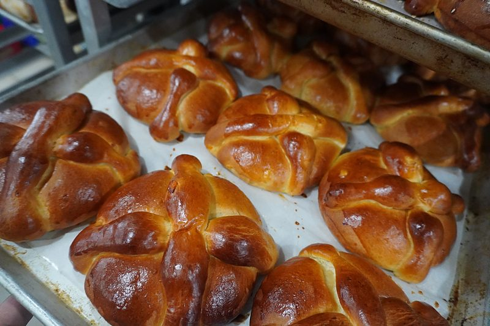
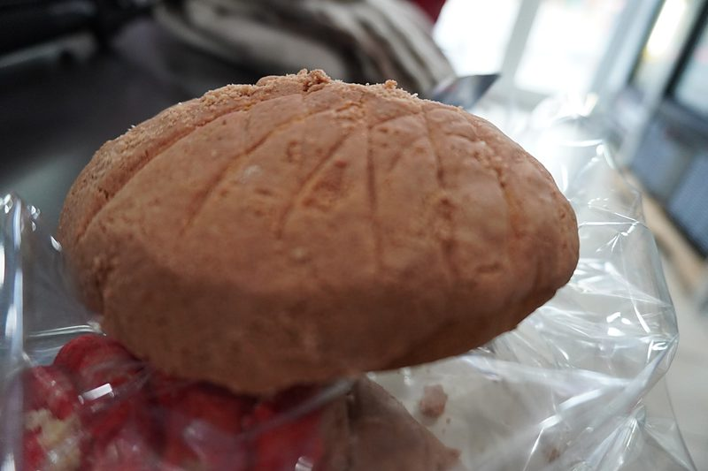
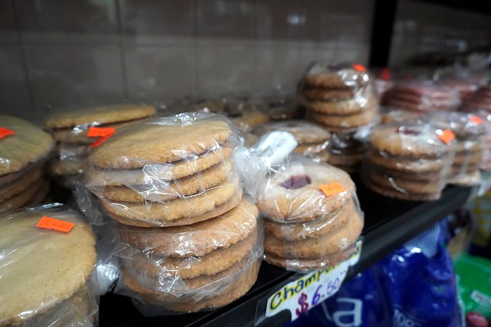
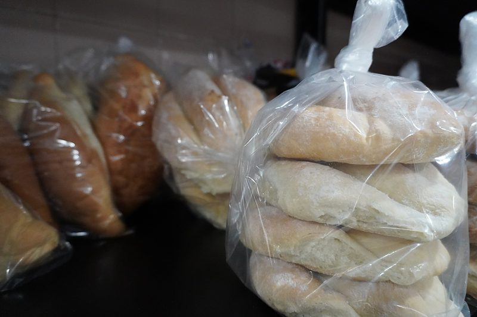
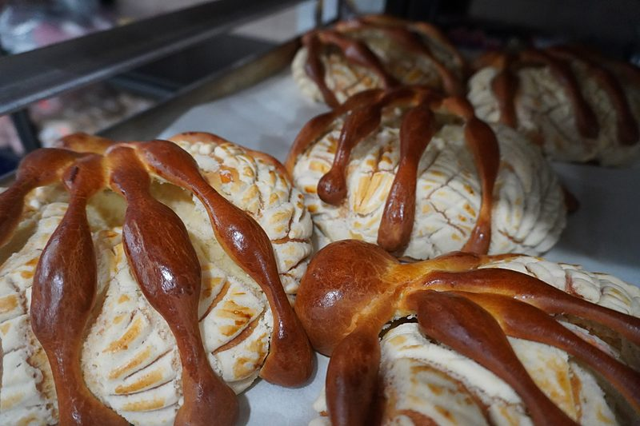
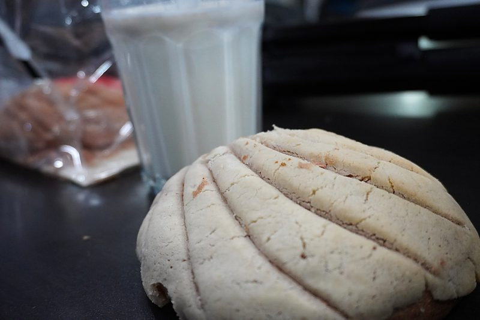
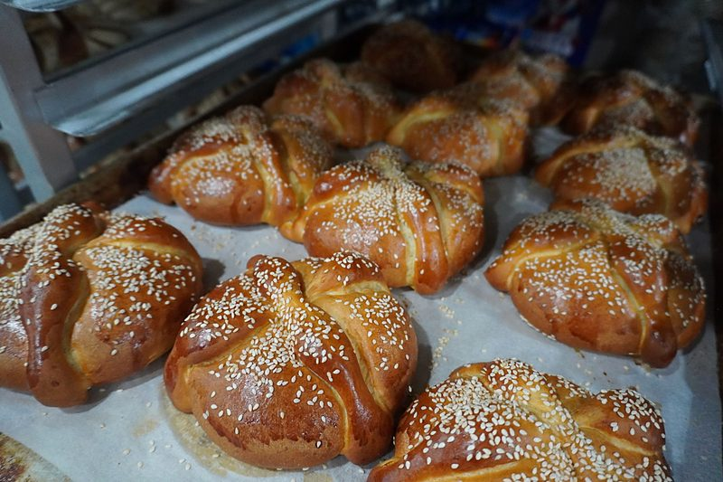
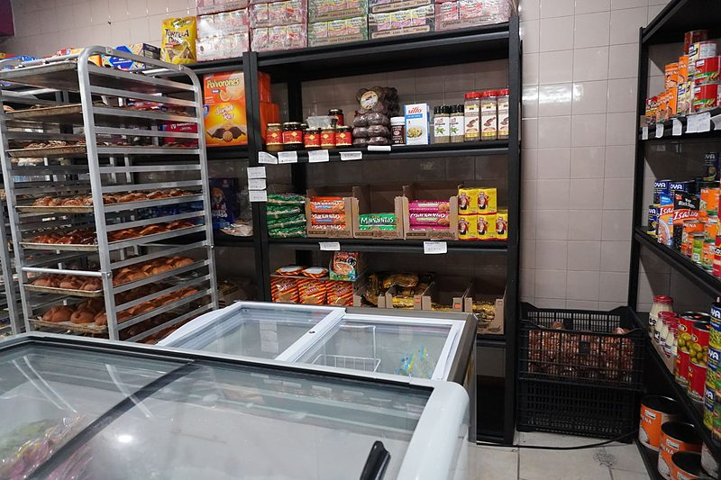
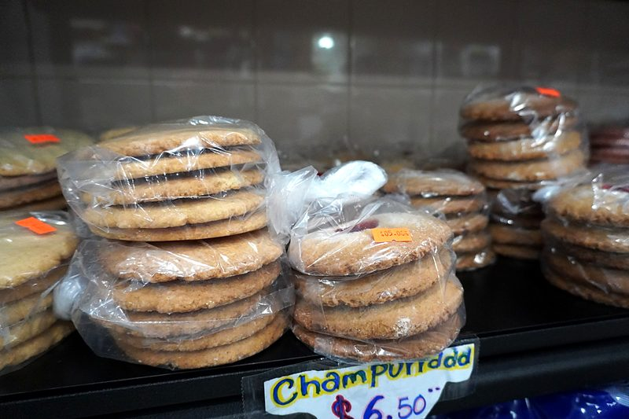
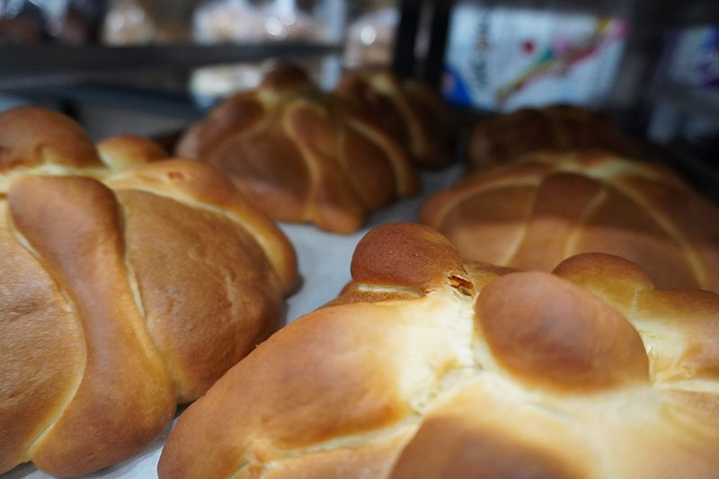

Recién horneado
Pan artesanal
Pan dulce y salado mexicano, fresco todos los días.

Día de Muertos
¡Ya llegó el pan de muerto!
Suave y aromático, con ajonjolí, glaseado o con cubierta de concha. Disponible solo por temporada: ven por el tuyo o llámanos para apartarlo.
Apartar mi panPan dulce
-

Conchas
Nuestra concha de fresa: suave por dentro y con su costra dulce de colores.
-

Galletas
De mantequilla y con mermelada
- CuernitosSuaves y mantequillosos
- OrejasHojaldre crujiente con azúcar
- PolvoronesSe deshacen en la boca
- MarranitosDe piloncillo y canela
- DonasCon azúcar y canela
Pan salado
-

Bolillos
Bolillos y teleras frescos, perfectos para tus tortas.
- TelerasPara tus tortas favoritas
De temporada
-

Pan de muerto de concha
Lo mejor de los dos: el pan de muerto con su cubierta de concha.
- Pan de muertoOctubre y noviembre
- Rosca de ReyesEnero — ¡encárgala!
Recién salido del horno





La disponibilidad cambia cada día. Llámanos para apartar tu pan o hacer un pedido grande.